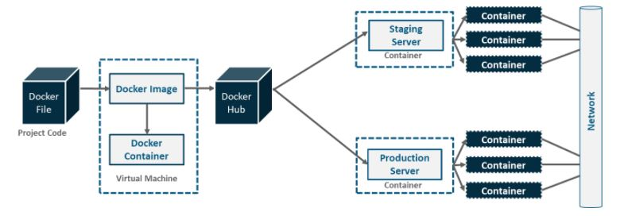
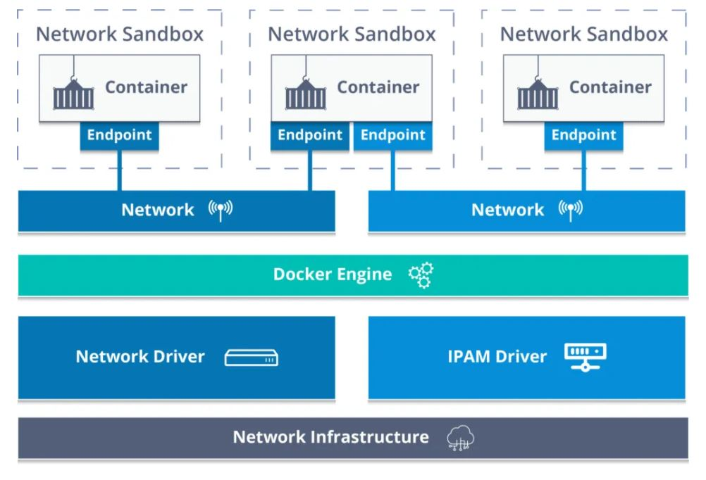
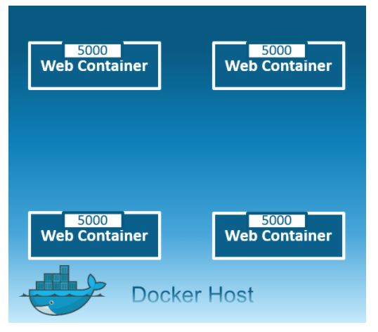
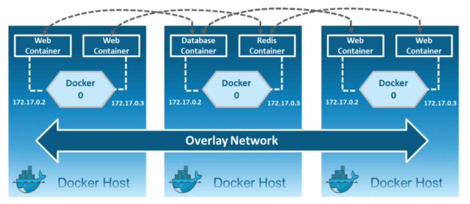
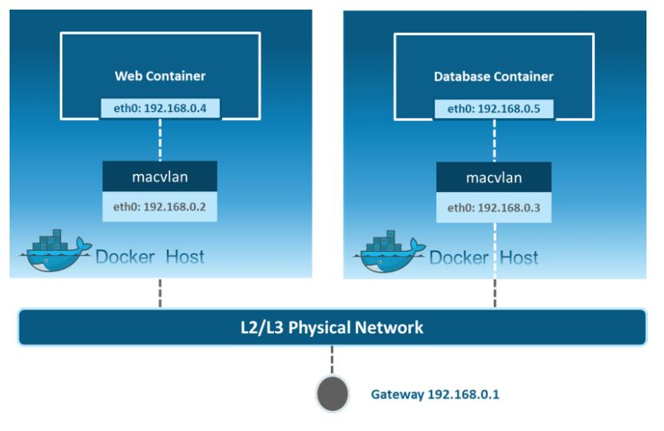

Docker Networking is used to connect the docker containers to each other and outside world so they can communicate with each other also they can talk to Docker Host. You can connect
docker containers to non-docker workloads. Docker uses CNM (container network model) for networking. This model standardizes the steps required to provide networking for
containers using multiple network drivers.

As you can see in the above diagram. A developer writes a code that stipulates application requirements or the dependencies in an easy to write Docker file and this docker
file produces docker images. So, whatever dependencies are required for a particular application are present in this image.
Now, Docker containers are nothing but the runtime instance of docker image. These images are upoaded onto the Docker hub (repository for docker images) which
contains public/private repositories.
So, from public repositories, you can pull your image as well and you can upload your own images onto the docker hub. Then, from docker hub, various team
such as Quality Assurance or Production team will pull that image and prepare their own containers. These individual containers, communicate with each other through a network
to perform the required actions, and this is nothing but Docker Networking.
So, you can define Docker Networking as a communication passage through which all the isolated containers communicate with each other in various situations to
perform the required actions.
Container Network Model(CNM) -
Before we go through the term called CNM, let us understand about Libnetwork.
Libnetwork is an open source Docker library which implements all of the key concepts to the make up the CNM.

--------------------Architecture of Container Networking Model -------------------
So, Container Network Model (CNM) standardizes the steps required to provide networking for containers using multiple network drivers. CNM requires a distributed key-value store
like console to store the network configuration.
The CNM has interfaces for IPAM plugins and network plugins.
THE IPAM plugin APIs are used to create/delete address pools and allocate/deallocate container IP addresses, whereas the network plugin APIs are used to create/delete networks
and add/remove contaniners from networks.
The CNM has mainly build on 5 objects: Network controller, Driver, Network, Endpoint, and Sandbox.
Container Network Model Objects -
Netowrk Controller: Provides the entry-point into Libnetwork that exposes simple APIs for Docker Engine to allocate and manage networks. Since Libnetwork supports multiple
inbuilt and remote drivers, Network Controller enables users to attach a particular driver to a given network.
Driver: Owns the network and is responsible for managing the network by having multiple drivers participating to satisfy various use-cases and deployment scenarious.
Network: Provides connectivity between a group of endpoints that belong to same network and isolate from the rest. So, whenever a network is created or updated, the
corresponding Driver will be notified of the event.
Endpoint: Provides the connectivity for services exposed by a container in a network with other services provided by other containers in the network. An endpoint
represents a service and not necessarily a particular container, Endpoint has a global scope within a cluster as well.
Sandbox: Created when users request to create and endpoint on a network. A sandbox can have multiple endpoints attached to different networks representing container's
network configuration such as IP-address, MAC-address, routes, DNS.
So, those were the 5 main objects of CNM.
Now let us go through the various network drivers involved in Docker Networking -
Bridge Networking -
1. Bridge network is a private default internal isolated network created automatically when you deploy a container on the host.
2. So, all the containers get an internal IP address and these containers can access each other, using this internal IP.
3. Bridge network uses a software bridge that allows containers connected to the same bridge network to communicate.
4. Bridge networks used on containers that are running on the same docker daemon host.
5. The Bridge netoworks are usually use when your applications run in standalone containers that need to communicate.

Host Networking -
1. This driver removes the network isolation between the docker host and the docker containers to use the host's network directly.
2. So with this, you will not be able to run multiple web containers on the same host, on the same port as the port is now common
to all containers in the host network. Unless you use different port on docker host.
3. Host mode networking can be useful to optimize performance.
4. It doesnot require network address translation (NAT).

Note: The host networking driver only works on Linux hosts. and is not supported on Docker Desktop for Mac, Docker Destop for Windows, Docker EE for windows server.
None -
1. In this kind of network, containers are not attached to any network and do not have any access to the external network or other containers.
2. So, this network is used when you want to completely disable the networking stack on a container and, only create a loopback device.

Overlay Networking -
1. Creates an internal private network that spans across all the nodes participating in the swarm cluster.
2. So, Overlay networks facilitate communication between a swarm service and a standalone container, or between two standalone containers on different Docker Daemons.
3. Overlay networking is used if container on host A wants to talk to host B then to make communication between them we use overaly networking.
4. Overlay networking uses VXLAN to create an overaly network.
5. This has the advantage of providing maximum portability across various cloud and on-premises networks.
6. By default, the overlay network is encrypted with AES algorithm.

Macvlan Networking -
1. Macvlan network is used to connect applications directly to the physical network.
2. By using macvlan network driver to assign a mac address to each container, also allow having full TCP/ ip stack.
Then, the Docker daemon routes traffic to container by their MAC addresses.
3. You can isolate you macvlan networks using different physical network interfaces.
4. This is used in legacy applications which require MAC address.
5. Macvlan driver is the best choice when you are expected to be directly connected to the physical netowrk, rather than routed through the docker host's network stack.

Docker Network commands -
-> docker network ls
-> docker network create -d bridge my_network
-> docker network connect my_network client
-> docker network disconnect mynetwork client
-> docker network rm mynetwork